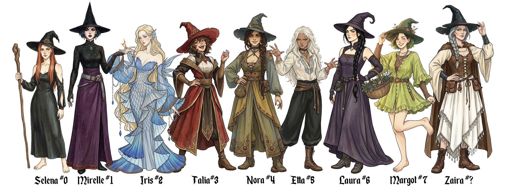
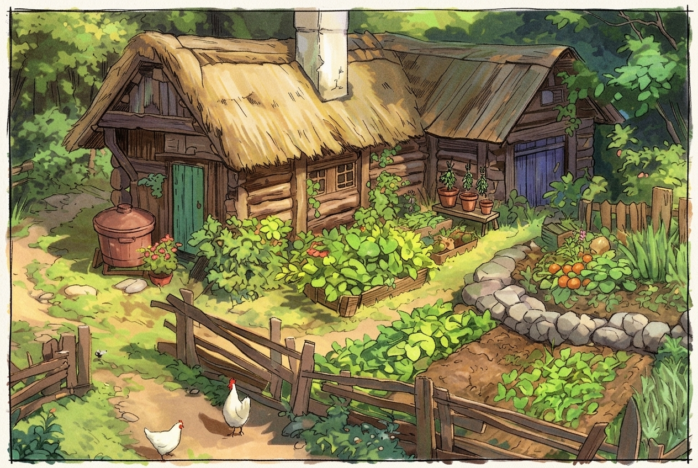
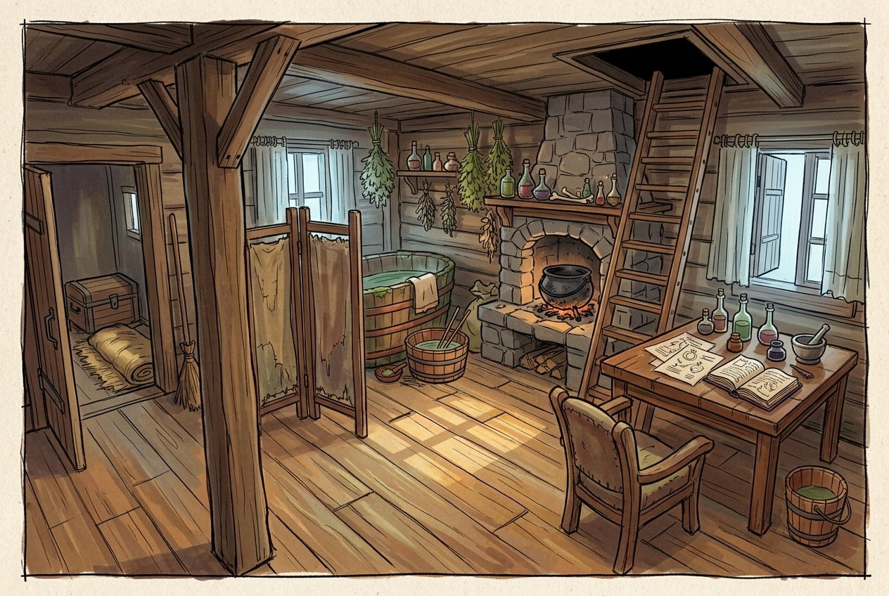
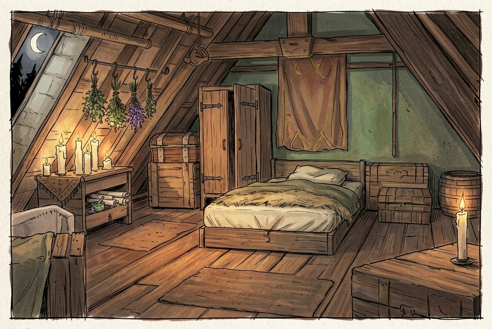
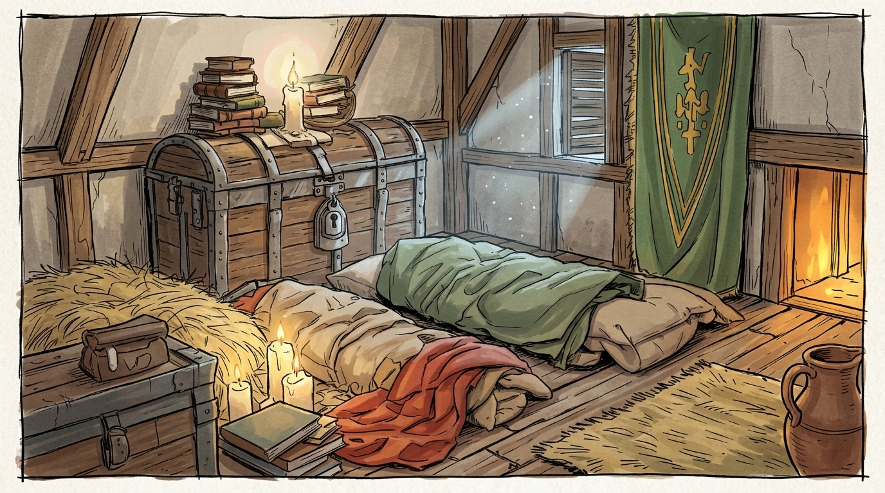
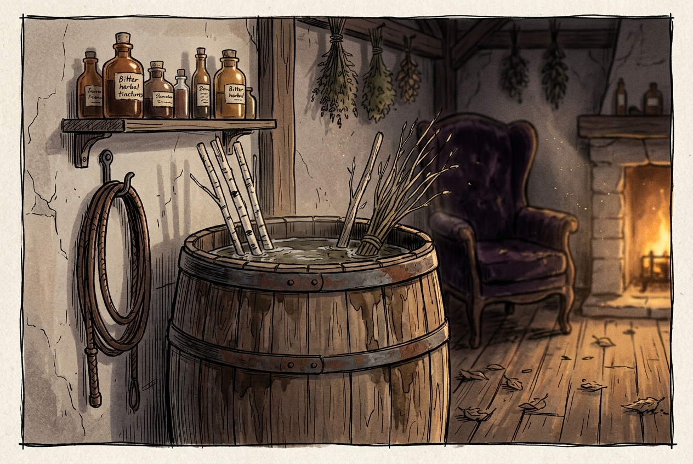
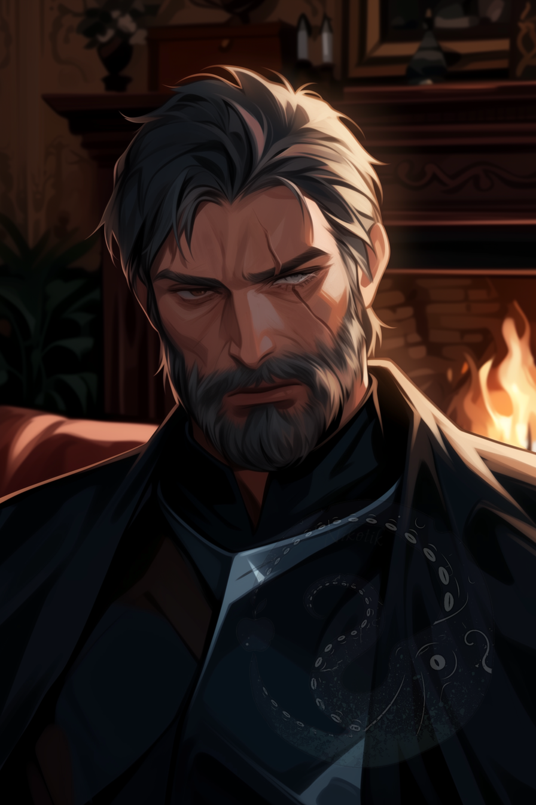
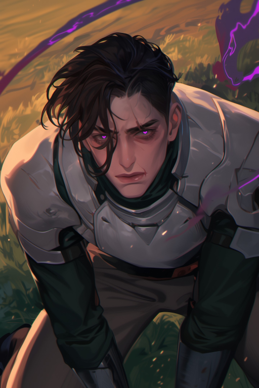

Covens
🐙Octopus Coven

An ancient coven that has fallen apart more than once. It contains nine witches — one "head" and eight "tentacles." Extremely old-school: pointy hats, minimalist dresses, bare feet, ascetic lifestyle. Selena set strict rules. Witches are numbered like an octopus's limbs; the Head is #0, and the numbering does not shift when someone leaves.
- Reputation: controversial Status: fragmented
- Allies: Forest Keepers, Fairy Council, Eden Academy
- Occupation: natural balance, potions, helping people, cemetery watching, spirit tracking and binding
- Founder: Zaira Veira (now a hermit) Head: Selena Veira
- Base: Selena's house near the forest and Fairhaven
Founded centuries ago and famed for discovering a contraceptive potion, the coven grew immensely wealthy, fell into political thrall, and disintegrated — many executed for heretical potions. It fell out of favor with Dawn. Left alone, Zaira eventually took Selena as apprentice and passed on her knowledge but not her power. Selena and three friends revived the coven, cleared its name, then broke apart after Talia's tragic death. Selena sold the coven's wealth and turned to asceticism.
The coven can cast curses, soothe the dead, brew potions, and create shadow tentacles. Every witch has a special trait tied to her personality.
Dawn's curse: Impossible to leave this coven. Great only when apart from each other. (This conflicts with the concept of a Place of Power, causing internal tension.)

Selena Veira — #0, the Head
Reviver of the coven. Ascetic and strict, she set the coven's rules. She talked Talia into the bond that killed her, and has lived in austerity ever since.

Mirelle Dallas — #1, First Tentacle
Reviver. Careerist, cruel, contradictory, despises sentimentality. After the coven's fracture fled to Black Vine, where she climbed to the inner circle. Burned Selena's hut twice. Unofficially tied to the Black Vine Coven.

Iris Daanen — #2, Second Tentacle
Reviver. Compassionate, kind-hearted, zen-like, tearful. Cries at beauty, cruelty, and memory. Now a hermit and the bride of the sea prince. Lives in a cave-hermitage carved into the cliffs of Sidehill. Tries to prove the existence of mermaids (no one believes her). Still consults with Talia's spirit.

Talia Moen — #3, Third Tentacle
Reviver. Daring, cheerful, brave, responsive, ray of sunshine. The ringleader and "glue" for the four revivers. Died during the formation of a sympathetic bond with dragon Malfurion. No grave; scattered ashes. A homemade headstone at the cemetery in Fairhaven.

Nora Feld — #4, Fourth Tentacle
Mirelle's ex-apprentice. Cheerful, enterprising, resourceful, impulsive. Left the coven (against Black Vine's bloody rituals) and fled to Octopus coven, then left to open a potion shop. Bonded with a werewolf; founded the "Family" werewolf shelter.

Etta Croy — #5, Fifth Tentacle
Mirelle's apprentice. Quiet, antisocial sociopath, living weapon. Raised in Black Vine from infancy, victim of rituals (experiment to gain magical abilities without joining a coven). Mute. Mirelle secretly tricked Selena into accepting her as "new apprentice." Uses blood magic and puppeteering; magic works while Etta is in pain.

Laura — #6, Sixth Tentacle
Selena's apprentice. Pragmatic, resourceful, often on travel. A good diplomat, stereotypical female. Special skill in gardening magic. Hidden lesbian with light feelings for Selena. Traveled with a merchant's family until settling in Fairhaven at 13.

Margot — #7, Seventh Tentacle
Selena's apprentice. Shameless, social, rule-breaker. A reflection of Selena as a child. Special skill in simple illusions (tactile, sound, sensory). Lived in Fairhaven all her life. Selena saved her from undead in the cemetery; she came every day for a month begging to become a witch. Held out as a good girl for exactly one week after joining.

Zaira Veira — Founder of Octopus Coven
The ex-head of the old Octopus coven and a wandering witch. Brilliant but harsh. Attempted to learn magic at the academy and became a "heretic" for both sides. Incurred the wrath of Dawn. She witnessed the dissolution and rebirth of the Octopus Coven. Raised Selena from childhood. Calls herself "nasty old woman," but is honest, wise, and powerful. By force joins the coven upon reviving, because "ex-head cannot leave the coven."
#8, the eighth tentacle, is not yet occupied — the future apprentice of Selena.
Selena's House
A small home nestled between the forest and Fairhaven. A one-room shack with a vegetable garden, orchard, and chickens. Inside, a cauldron sits in the corner among herbs; a ladder leads to the attic where Selena sleeps. There is a fireplace, a large bathing tub behind a screen, a tub of water where rods are soaked, the head's upholstered chair near the hearth, and an oak table littered with papers. The air smells of dried herbs and wood smoke. The apprentice's room to the left of the entrance holds straw sleeping bags, a trunk, and books. Clean, good food, wooden floors.





🥀Black Vine Coven
A large coven with a deceptively good reputation in Noxland. They seek to find the recipe for eternal life (without necromancy); because of that, they often use blood or forbidden rituals — making them unpopular with other covens. They recruit followers once a year (many disappear). Witches train for the first year as usual, then are initiated into rituals. Refusal means death. Involved in charity work, in good standing with the king, own a network of orphanages (raise children for experiments). Location: Dark Mansion, Noxland.
🕊Dove Coven
A small coven of three witches who help those trapped by failed sympathetic bonds. Essentially an assassin organization. No one has seen the founders; they communicate telepathically through doves and command a large assassin family (various mercenaries who made deals with them). To summon an assassin: sacrifice a live dove while mentally stating your intentions. If accepted, the dove revives and flies to an assassin who can fulfill the contract. Assassins are forbidden to kill without a contract; execution if caught.
🐰Rabbit Coven
Dawn's favorite coven. Consists of men and women obsessed with procreation. A huge number of members throughout the kingdom. They celebrate fertility and follow Dawn's "be fruitful and multiply" doctrine to the extreme.
🐺Snow Wolf Coven
An all-male coven in the north. One of the rare successful male covens, proving that men can thrive as witches despite social stigma.
Cults
💀The All-Devouring Swarm
A cult of necromancers who believe nature is unjust and that everyone deserves a life after death. They live in dungeons in huge cults, connecting minds into a single network. Highly organized and dangerous.
The Family
An official werewolf shelter founded by the wealthy alchemist Nora Feld. Ten infected, each with their own temperament and goals. See Werebeasts for the full story and pack.
Knightly Orders
🛡️The Knight's Order — Golden Lions
One of the most prestigious knightly orders, granted by the King himself. The title is awarded for exceptional merit or faithful long-term service in Noxland without reprimand. It grants the right to join highly classified missions, real power, and minor nobility for the holder and their family.
Some members: Marcus Durante (Captain of the Noxland Guard), Valentine Drauman (one of the youngest knights).

Marcus Durante — Captain of Noxland Guard
An ageing commander of the city guard. Member of the Golden Lions. Expects gratitude in return for his protection, weary from years of responsibility.

Valentine Drauman — Knight of the Golden Lions
A proud knight whose identity is built on the certainty that law and order stand above all. Born to a knightly family, well educated, rose quickly through the academy and entered service as a respected — if intense — young knight.
The Fairy Council
🧚The Fairy Council
The collective name for all fairy clans occupying the kingdom's forests. See Beings for fairy lore.